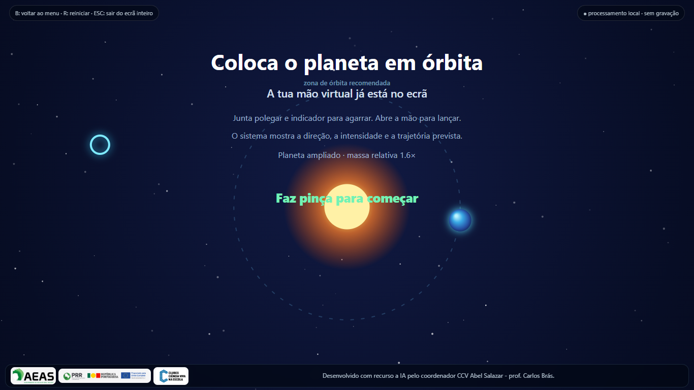

Clique na imagem para ver o ecrã completo.
01
Coloca o planeta em órbita
O aluno define a direção e a intensidade do lançamento para tentar colocar um planeta numa órbita estável em torno de uma estrela.
Propósitos pedagógicos
Explorar a gravidade, a representação vetorial, a relação entre velocidade e trajetória e o equilíbrio necessário a uma órbita. Promove previsão, tentativa fundamentada e leitura do resultado.